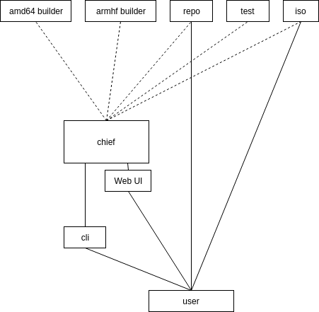
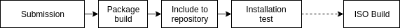

irgsh-go¶


IRGSH (https://groups.google.com/d/msg/blankon-dev/yvceclWjSw8/HZUL_m6-BS4J, pronunciation: irgis) is an all-in-one tool to create and maintain Debian-derived GNU/Linux distribution: from packaging to repository, from ISO build to release management. This codebase is a complete rewrite of the old IRGSH components (https://github.com/BlankOn?q=irgsh).
This is still under heavy development, therefore you should not rely on this for production since it still subject to breaking API changes.
Patches, suggestions and comments are welcome!
Complete installation¶
You need Docker, Redis and these packages,
gpg pbuilder debootstrap devscripts curl reprepro dh-make
Install all deps + released IRGSH with this command bellow,
curl -L -o- https://raw.githubusercontent.com/BlankOn/irgsh-go/master/install.sh | bash
The command will install the irgsh binaries, default configuration and daemons. A spesial user named irgsh will also be added to your system.
Package maintainer installation¶
curl -L -o- https://raw.githubusercontent.com/BlankOn/irgsh-go/master/install-cli.sh | bash
The command will install the irgsh-cli binary to your system.
Package maintainer update¶
Package maintainer can update their irgsh-cli by running the same command as installation or using sudo irgsh-cli update to let irgsh-cli updates itself.
Components¶
A minimal IRGSH ecosystem contains three services and a CLI tool.
irgsh-chiefacts as the master. The others (also applied toirgsh-cli) will talk to the chief. The chief also provides a web user interface for workers and pipelines monitoring.irgsh-builderis the builder worker of IRGSH.irgsh-repowill serves as repository so it may need huge volume of storage.irgsh-cliis a client-side tool to maintain packages.
Architecture¶


GPG signature is used as authentication bearer on any submission attempt. Hence, you will need to register maintainer's public key to irgsh's GPG keystore (read Initial setup).
Initial setup¶
IRGSH¶
Please refer to /etc/irgsh/config.yml for available preferences. Change it as you need.
irgsh-init
CLI tool¶
This CLI tool intended to be used on maintainer's local system. It need to be configured first to define the irgsh-chief instance address and your GPG key as package mantainer,
irgsh-cli config --chief http://irgsh.blankonlinux.or.id:8080 --key B113D905C417D9C31DAD9F0E509A356412B6E77F
Registering a maintainer¶
A maintaner should have a GPG keypair on his machine. His/her public key need to be registered to irgsh's GPG key store.
Export maintainer's GPG public key
gpg --armor --export 0D7D9A42E03ACFA2933227F7A13769F4DB99B6CD > /path/to/maintainer-public.key
The public.key file need to be transfered into where irgsh-chief live. Then import the maintainer's public key (on behalf of irgsh),
gpg --import < /path/to/maintainer-public.key
You can check the list of registered maintainer (on behalf of irgsh),
gpg -k
Run¶
The Services¶
You can start them with,
sudo systemctl start irgsh-chief
sudo systemctl start irgsh-builder
sudo systemctl start irgsh-repo
Their logs are available at /var/log/irgsh/. After these three services are up and running, you may continue to work with irgsh-cli
CLI¶
Submit a package,
irgsh-cli submit \
--source https://github.com/BlankOn/bromo-theme.git \
--package https://github.com/BlankOn-packages/bromo-theme.git
Check the status of a pipeline,
irgsh-cli status 2019-04-01-174135_1ddbb9fe-0517-4cb0-9096-640f17532cf9
Inspect the log of a pipeline,
irgsh-cli log 2019-04-01-174135_1ddbb9fe-0517-4cb0-9096-640f17532cf9
Running irgsh-cli status and irgsh-cli log without argument will referenced to the latest submitted pipeline ID.
FAQ¶
Why rewrite it?¶
IRGSH was written in Python 2.6.x and it depends on some old and deprecated libraries. Even one of them (in a specific version, respectively) is no longer exists on the internet. A real dependency hell. It’s hard to deploy IRGSH in a modern operating system and it keeps alynne.blankonlinux.or.id from an important system upgrade. The IRGSH was also very modular but combining them into a working distributed cluster takes time and quite steep learning curve. We still need to prepare a lot of things manually before doing that. Pbuilder needs to be configured and setup. Which also true for the reprepro repository. No easy way.
Although, there is no doubt that the old IRGSH does its work well.
Why Go?¶
For its portable compiled binary.
Can I run the workers on different machines?¶
You can. Just make sure these workers pointed out to the same Redis server (see /etc/irgsh/config.yml). Also please consider this, https://redis.io/topics/security.
Why is Docker required?¶
To build a package using pbuilder, sudo or root privilege is required but it's not okay to rely on root privilege for repetitive tasks. To get rid of this, we containerized the build process.
Troubleshooting notes¶
No secret key¶
The error message may be like this,
gpg: skipped "41B4FC0A57E7F7F8DD94E0AA2D21BB5FAA32AF3F": No secret key
gpg: /tmp/debsign.QNCSozgK/blankon-keyring_2016.09.04-4.2.dsc: clear-sign failed: No secret key
debsign: gpg error occurred! Aborting....
debuild: fatal error at line 1112:
running debsign failed
It may caused either by:
- Your defined key for signing is not available on your GPG keystore. Please redefine it with
rgsh-cli config --chief https://irgsh.blankonlinux.or.id --key YOURKEYIDENTITY - The latest maintainer information that written in the debian/changelog does not matched with the one on your GPG keystore. Please adjust the changelog file.